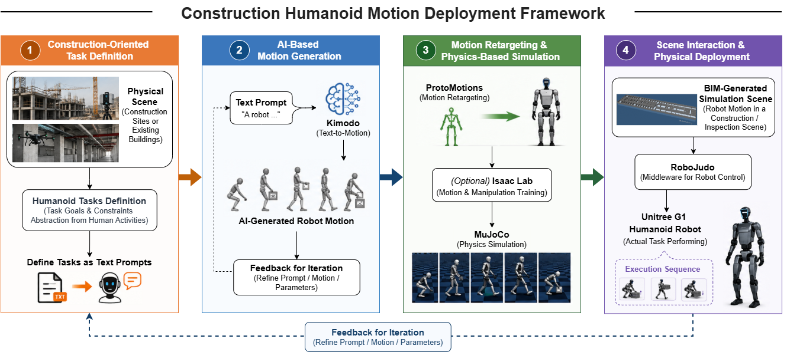

Humanoid robots have recently attracted significant attention as a promising automation technology for construction due to their ability to operate within human-designed environments and perform human-like movements. How-ever, developing and deploying humanoid behaviors for real-world construction applications remain challenging because AI-generated motions must be adapted to robot-specific kinematics, validated for physical feasibility, and safely transferred from simulation to physical hardware. To address these challenges, this paper proposes a Construction Humanoid Motion Deployment Framework (CHMDF) that establishes an integrated simulation-to-real workflow for AI-generated humanoid motions. The framework combines Kimodo for motion generation, ProtoMotions for humanoid motion retargeting, MuJoCo for physics-based simulation, RoboJudo as the robot communication middleware, and the Unitree G1 humanoid robot for physical execution. The proposed workflow enables generated human-like motions to be systematically adapted, evaluated, and transferred to a physical humanoid platform while reducing development risks through simulation-first validation. A proof-of-concept demonstration using a simple whole-body motion is presented to verify the feasibility of the complete deployment pipeline. Alt-hough the demonstrated motion is intentionally simple, it validates the integration of the proposed framework and provides a reusable foundation for future construction-oriented humanoid applications. The proposed approach contributes a structured methodology for bridging AI-based motion generation and real humanoid deployment, supporting future research on inspection, facility management, human–robot collaboration, and other construction-related tasks.

Please cite the paper as follows:
Xuling Ye, Wenyue Deng, Markus König, From AI Motion Generation to Real Humanoid Deployment: A Digital Workflow for Construction Robotics, ICCBEI 2027 (under review).